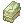

Leveling Guide/Portuguese
Introdução
Este é um método comum de up, não necessariamente o melhor, mas ainda assim fácil e rápido. Você pode encontrar guias de up específicos para cada classe em Class Guides. Lembre-se de avançar sua Classe quando alcançar o nível de Base e Classe apropriados:
- Nível de Classe 10 para Novice/High Novice.
- Nível de Classe 50 para 1ª Classe/1ª Classes Transcendental.
- Nível de Base 99 e nível de Classe 50 para 2ª Classe.
- Nível de Base 99 e nível de Classe 70 para 2ª Classe Transcendental.
Sinta-se livre para explorar e fazer do jeito que quiser! Isso é a essência do Ragnarok Online.
Se você se sentir perdido com builds e outras formas de upar, existe o #support e #portuguese, tanto dentro do jogo quanto no NovaCord!
Dicas de Up
- Faixa de Divisão de Exp: 30 níveis de base. Por exemplo, se alguém no seu grupo for nível 175, então todos os membros devem ser pelo menos nível 145 para dividir EXP.
- Equipamentos de EXP: Angel Poring Boots and Heroic Capes são ótimos equipamentos de nivelamento que podem ser usados for nível 1.
- Antes de Renascer: Complete algumas quests do nível 91-99 no Grupo Éden (como Rachel/Veins, Glast Heim, e Turtle Island) enquanto seu personagem for Nível 99/50. Vire uma classe transcendental 1 (High Swordman, High Thief, High Mage, etc). Então, entregue as quests Nível 91-99 que você completou anteriormente para um up rápido.
- Quests de Coleta: Algumas quests do Grupo Éden requerem que você procure por itens. Há uma lista deles aqui.
- Pontos de Spawn: O Renewal mudou a localização de quase todos os monstros do jogo. Caso não consiga encontrar um monstro ou item, tente o seguinte:
- CTRL + ` : Mostra um mapa de todos os campos no jogo. Clique em um mapa para buscar os NPCs ou monstros dentro dele.
- @whereis (Nome do Monstro): Mostra uma lista de mapas onde um determinado monstro aparece, e a sua quantidade.
- @mi (Nome do Monstro): Mostra informações detalhadas de um determinado monstro.
- @whodrops (Nome do Item): Mostra uma lista de monstros que derrubam um determinado item, e a chance.
- Novice Package: Todos os novos personagens recebem um pacote, no qual podem ser encontrados os seguintes itens:
 Novice Package Novice Package
|
 Intermediate Package (Lv 50) Intermediate Package (Lv 50)
|
 Veteran Package (Lv 99) Veteran Package (Lv 99)
|
 Master Package (Lv 125) |
|---|---|---|---|
500  Novice Potion Novice Potion
|
250  Intermediate Potion Intermediate Potion
|
250  Veteran Potion Veteran Potion
|
250  Master Potion Master Potion
|
1  Rental Halter Lead Box Rental Halter Lead Box
|
50  Novice Blue Potion Novice Blue Potion
|
100 Novice Blue Potion
|
150 Novice Blue Potion
|
5  Blessing Lv 10 Scroll Blessing Lv 10 Scroll
|
50  Novice Fly Wing Novice Fly Wing
|
50 Novice Fly Wing
|
2  Combat Rations 30m Combat Rations 30m
|
| 1 Intermediate Package
|
1 Veteran Package
|
1 Master Package |
Aprendiz

Quando você cria um novo personagem, ele aparece logo acima de Prontera. É aqui que sua aventura começa! Entre no portal e selecione Wake Up para começar o Novice Tutorial e siga as instruções. Você pode pular o tutorial se já fez com outro personagem. Entretanto, o Novice Tutorial e a Instância Poring Village vão te colocar direto na 2ª Classe, e você poderá pular toda a parte de aprendiz e 1ª classe desse guia.
Se você decidir pular o tutorial, poderá pegar alguns níveis rapidamente seguindo esses passos:
Note: Não troque de Classe até ter completado todos os passos, isso é importante pois você vai ganhar equipamentos e consumíveis para tornar sua experiência de nivelamento mais fácil.
- Vá para Izlude
@go 5 - Fale com Shop Helper em .
- Selecione Ok, I'll listen.
- Fale com ela novamente e selecione Experience Training seguido de I will do it.
- Entre no prédio e compre uma
 Red Potion, ela é vendida pelo Tool Dealer em .
Red Potion, ela é vendida pelo Tool Dealer em . - Retorne para a Shop Helper e ela deixará você ficar com a poção e também te entregará 50 Novice Fly Wing.
- Agora fale com Criatura Academy Staff em . Ele vai te dar um Apple Juice, beba e fale com ele novamente para receber 30 Novice Potion.
- Fale com ele de novo e selecione I need help with that, ele vai te dar as direções para a Izlude Criatura Academy.
- Fale com Academy Receptionist e selecione Register for the Academy.
- Ela vai te recompensar com:
 Tattered Novice Ninja Suit
Tattered Novice Ninja Suit- Somber Novice Hood
- Novice Slippers
- Novice False Eggshell
- Novice Main-Gauche
- Novice Guard
- Criatura Hat
- 300 Novice Potion
- Guarde todos os equipamentos de Aprendiz para usar quando renascer e use o Criatura Hat até você adquirir seu
 Eden Group Hat II.
Eden Group Hat II.
- Fale com o Therapist, em , e escolha Red Herb Quest.
- Caminhe próximo ao Academy Student, em , e fale com ele até que lhe entregue uma
 Red Herb.
Red Herb. - Volte ao Therapist para completar a quest.
- Vá para Lasagna
@go 40. - Fale com Healer Haru, em , e selecione About First Aid e depois About Medical Botany, na última vez você precisará falar com ela duas vezes (Você deve ter alcançado Nível de Base 20 e Nível de Classe 10 após completar esses passos).
- Vá para o Main Office
@go 50e fale com o Job Master, em , para mudar para a 1ª Classe.- Ele vai te dar um
 Ring of Experience, equipe-o, e um Novice Package. (Quando equipado, o anel aumenta a experiência recebida de monstros em 20%, é válido por 3 dias e até alcançar o nível 100)
Ring of Experience, equipe-o, e um Novice Package. (Quando equipado, o anel aumenta a experiência recebida de monstros em 20%, é válido por 3 dias e até alcançar o nível 100) - Note: Lembre-se de utilizar todos os seus pontos de skill.
- Ele vai te dar um
Avançando para a sua primeira classe
- Em Prontera
@go 0, à sua esquerda, você irá encontrar o Main Office@go 50. Entre no portal. - Siga pela esquerda até encontrar o Job Master - não esqueça de gastar todos os pontos de skill!
- Mude para sua primeira classe. A classe que você escolheu durante o Tutorial não impacta em sua decisão final.
- OBS: Se você decidir fazer a quest normal de mudança de classe, mesmo assim fale com o Job Master depois, ele lhe dará um Novice Package e um Ring of Experience.
Algumas sugestões para conseguir os primeiros níveis de classe, caso não queira ir direto para o Eden Group:
- Use o
@go 40para se teletransportar para Lasagna, a cidade Doram. - Vá até o Healer Haru.
- Fale sobre First Aid com ele, e ganhe experiência.
- Se você fez a quest Red Herb Quest na Criatura Academy e ganhou a erva vermelha, você pode perguntar sobre Medical Botany. Faça isso duas vezes para ganhar mais níveis de classe.
Grupo Éden

- Antes de ir ao Grupo Éden vá para Payon Dungeon.
 Warper –› Dungeons –› Payon Dungeon
Warper –› Dungeons –› Payon Dungeon
- Coloque 9 pontos em DEX e o resto em STR/AGI, se você for uma classe de dano físico.
- Coloque as Novice Potion na sua barra de habilidades e lembre de usar em combate.
- Mate Zombies até você ter 220 HIT (Precisão). Então mude pare Skeletons até chegar ao nível 26.
- Vá para Eden Group
@go eden.
- Vá para cima e fale com Secretary Lime Evenor, e escolha Join the Eden Group.
- Fale com Instructor Boya e aceite participar do treinamento.
- Volte para Payon Dungeon. Warper –› Dungeons –› Payon Dungeon
- Saia da caverna e fale com o Eden Member Karl em .
- Volte para o Eden Group
@go edene fale com a Instructor Boya. - Fale com Administrator Michael em e escolha To get supplies.
- Nota: Algumas classes podem escolher entre armas, então pense antes de escolher.
- Atenção para a conversa, quando ele perguntar, escolha I have got enough space!
- A partir desse ponto, faça as quests do Grupo Eden falando com as placas do seu nível no salão principal.
- É comum também ficar na Caverna de Payon até o nível 50, e fazer a quest da Caverna Orc com a Boya.
- Nota: Lembre-se de avançar para a próxima Classe quando alcançar nível de Classe 50.
A partir do Nível 71

- Fale com a placa Mission [71 - 85] e pegue as quests Glast Heim > Evil Druid e Glast Heim > Wraith.
- Fale com o Instructor Ur e aceite sua quest.
- Vá para Glast Heim St. Abbey. Warper –› Dungeons –› Glast Heim –› Glast Heim St.Abbey
- Fale com Johan em .
- Mate 10 Wraiths. Retorne para a placa Mission [71 - 85] e entregue a quest. Pegue-a novamente.
- Nota: Wraith e Evil Druid tomam o dobro de dano de elemento fogo ou sagrado, se a sua classe não tiver munição ou magia desses elementos você pode usar
 Fire Elemental Converter.
Fire Elemental Converter. - Você precisa de cerca de 305 HIT para lançar seus ataques de forma consistente em ambos os monstros se sua classe for de dano físico.
- Nota: Wraith e Evil Druid tomam o dobro de dano de elemento fogo ou sagrado, se a sua classe não tiver munição ou magia desses elementos você pode usar
- Volte para Johan e pegue sua próxima quest.
- Mate 10 Evil Druids.
- Volte para Johan e depois retorne ao Grupo Éden.
- Retorne para a placa Mission [71 - 85] e entregue as quests.
- Fale com o Instructor Ur.
- Enter na porta e vá para o portal no canto direito superior.
- Fale com Toren em para receber seus novos equipamentos.
- Nota: Algumas classes podem escolher armas, então tenha cuidado com a sua escolha.
- Continue refazendo essas quests até atingir nível 85.
- A partir desse ponto, você pode continuar upando com Quests do Grupo Eden ou começar a fazer Gramps.
A partir do Level 85 (Método para chegar em classe 3 instantaneamente depois de rebornar)
- Complete as duas quests 85-114 Gramps. Você provavelmente já estará 99/50 antes de terminá-las. Não entregue-as.
- Compre 6
 Holy Water e 6
Holy Water e 6  Blue Gemstone do Tool dealer, e então complete a quest Cautious Village.
Blue Gemstone do Tool dealer, e então complete a quest Cautious Village. - Não entregue essa quest. Pare antes de entregar a última Holy Water e Blue Gemstone para o último NPC. Não fale com Mumbaki.
- Reborne e pegue uma Faca. Vá para Payon Dungeon e mate um Zombie (você precisará de poções), volte para Main Office e pegue 1ª Classe novamente.
- Entregue a quest Cautious Village para pegar Job Level 50 imediatamente. Troque de classe.
- Entregue as duas quests do Gramps e você estará 99/69. Utilize as Eden Board Quests ou o mapa do Gramps para o último level de classe. Main Office > Classe 3.
Alternativa para Classes Expandidas
- Siga os passos da seção Aprendiz
- Compre 6 Holy Water e 6 Blue Gemstone do Tool dealer, então faça a Cautious Village quest.
- Siga os passos da seção A partir do Nível 71.
Alternativa para Dorams
- Compre 6 Holy Water e 6 Blue Gemstone do Tool dealer, e então faça a Cautious Village quest.
- Complete a quest do Instructor Ur para obter equipamentos e arma do Eden, confira a seção A partir do Nível 71.
- Neste ponto, você já deve ter alcançado nível para fazer Gramps 85+.
- Você pode conferir a página Doram para aprender sobre seus equipamentos exclusivos.
Terceiras Classes e Evoluções das classes Expandidas
Parabéns! Você está um passo mais próximo de se tornar o melhor herói! Daqui em diante você tem várias alternativas para up, como Gramps, Instâncias, Placas do Éden, quests pelo mundo e caçando MVPs.
Se esse é o seu primeiro personagem é muito recomendado fazer o máximo de quests das Placas do Éden possíveis no segundo andar. Dessa forma, você começa a ganhar  Paradise Coins para comprar os Awaken Paradise Equipment. Falando de equipamento, dá uma olhada nos equipamentos de Mora, existem vários conjuntos muito úteis para algumas classes.
Paradise Coins para comprar os Awaken Paradise Equipment. Falando de equipamento, dá uma olhada nos equipamentos de Mora, existem vários conjuntos muito úteis para algumas classes.
Também é recomendado fazer essas duas instâncias o quanto antes:
- Sara's Memory
- Essa instância vai dar uma quantidade boa de XP e várias comidas de stats.
- Se você só quiser pegar as comidas de stats +6, você pode desligar o @autoloot e usar @alootid +12071|+12086|+12081|+12076|+12091|+12096.
- Isso vai te fazer pegar:
 Shiny Marinade Beef
Shiny Marinade Beef  Chilly Shrimp Gratin
Chilly Shrimp Gratin  Awfully Bitter Bracer
Awfully Bitter Bracer  Red Mushroom Wine
Red Mushroom Wine  Peach Cake
Peach Cake  Lucky Soup
Lucky Soup
- Ghost Palace
- Essa instância te permite comprar as armas de Thanatos, todas dão efeito de leech para recuperar HP e SP e são muito úteis.
Abaixo temos algumas quests rápidas e boas para ganhar mais XP.
Nível 100
New World Access Quest

Essa quest é um pré-requisito para as quests do Banquet for Heroes. Você vai precisar de 50,000 Zeny para completar essa quest.
- Vá até o Éden group.
@go eden - Fale com o Cat Hand Agent .
- Selecione "Why don't you collect it yourself"
- E depois "I'll help the merchants."
- Converse com o Cat à direita
- Selecione "Let's do this!"
- Após ser transportado, vá ao norte e converse com o Cat Hand Agent .
- Selectione "To the other world!"
- Após ser transportado novamente, a quest está completa e você pode continuar para a Banquet for Heroes.
Banquet for Heroes
- É recomendado completar a quest principal do Banquet for Heroes e algumas das quests opcionais.
- Learning About the Families
- Ritual of Blessing
- Room of Consciousness (Os boss ao final tem 10 milhões de HP. Vá com algum grupo forte.)
- The Geoborgs
- The Royal Head Chef
- Todas essas quests vão dar um total de 155m XP Base/120m XP Job só por conversar com NPCs, exceto pela Room of Consciousness, e devem ser o suficiente para chegar no nível 115 e fazer o Gramps [115-145].
Rock Ridge
Fazer a quest introdutória do Rock Ridge vai dar uma quantidade boa de experiência e também permitir a compra de equipamento do Rock Ridge usando os  Rock Ridge Coins.
Rock Ridge Coins.
Nível 140
- Se você fez as quests acima para o Banquet for Heroes, você vai desbloquear 1 quest (que dá bastante experiência) e algumas quests diárias que podem ser repetidas.
- Comece comprando uma
 Flower da Flower Lady em .
Flower da Flower Lady em . - Vá até a Prontera Prison a noroeste do salão principal do banquete. Mais detalhes sobre essa quest podem ser encontrados em Restricted Sector.
- Dentro da prisão existem 8 NPCs, 7 deles dão alguma quest diária.
- Para terminar a Restricted Sector você só precisa falar com cada NPC dentro da prisão, então você não precisa terminar nenhuma das quests deles. Apesar de que elas dão uma quantidade decente de experiência (35m Base/35m Job cada).
- Também há uma quest na Invaded Prontera (que é desbloqueada quando você termina a Room of Consciousness).
- Como chegar em Invaded Prontera: Warper –› Instances –› Sky Fortress .
- Como chegar em Invaded Prontera:
- Fale com o Chief Guard, em , para pegar a quest diária.
- Mais detalhes dessa quest podem ser encontrados em Chief Guard Requestss.
Todas essas quests, exceto a Restricted Sector, são diárias (reiniciam as 4AM no horário do servidor).
- A primeira vez que você as fizer, elas darão em torno de 400m de experiência (Base e Job). Nas próximas já darão 295m (Base e Job).
Verus
Fazer as quests diárias de Verus é uma boa fonte de experiência, para fazer a maior parte delas, você vai precisar entrar no Phantasmagorica Excavation Team.
Gramps

Informações Básicas
- Nessas quests, você terá que matar 400 monstros de dois tipos.
- Os monstros são alterados frequentemente, e há mapas especiais contendo os monstros das quests. Porém, monstros mortos fora deste mapa também contam para sua quest.
- São normalmente realizadas em grupos.
- Você pode procurar um grupo no Grupo Éden ou no canais de chat #lfg e #portuguese.
- Pare que o monstro conte para a quest, deve morrer na sua tela.
- Existem três faixas para as quests do Gramps.
- Nível 85-114
- Nível 115-144
- Nível 145-175
- Nível 175-200
- Você não pode entrar nos mapas especiais acima ou abaixo do seu nível.
| This quest or instance is repeatable. |
|---|
| The cooldown is 4 hours. |
Guia
- Para iniciar a quest, pegue as duas quests do seu nível com o NPC Monthly Hunts.
- Fale com o Gramps e escolha "Can you warp me?".
- Grupos normalmente consistem em... (Note que esses papéis variam muito dependendo da sua faixa de nível)
- Lurer: Seu trabalho é procurar monstros e trazê-los ao grupo. (Normalmente Espadachim/Gatuno/Monge)
- AoE: Seu trabalho é matar os monstros com golpes em área. (Normalmente Sentinelas/Magos/Gunslingers)
- Suporte: Seu trabalho é restaurar HP/SP e fornecer buffs. (Normalmente Sacerdotes/Bardos/Odaliscas/Professores)
- Dano: Seu trabalho é matar monstros soltos que não foram limpados no AoE (Normalmente Cavaleiro/Gatuno)
- O grupo sempre deve dividir experiência, mas normalmente os drops são divididos individualmente.
- Lembre-se que no caso de você ser uma classe de dano mas não ter golpes em área, você ainda pode e deve ser útil. Não fique apenas seguindo o grupo. Defenda seu suporte e ajude o grupo a continuar em movimento.